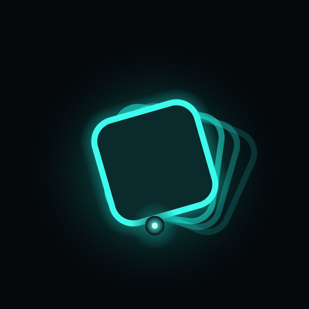

teeter is a realtime, GPU-accelerated music visualizer for the ASUS ROG Ally. It captures live system audio (WASAPI loopback), runs it through an FFT, and pours the spectrum into 13 feedback-warp shaders rendered at fullscreen 120 Hz — driven entirely by gamepad and touch.
Feedback echoes · hue-cycling palettes · a live DSP synth engine blended over system audio.